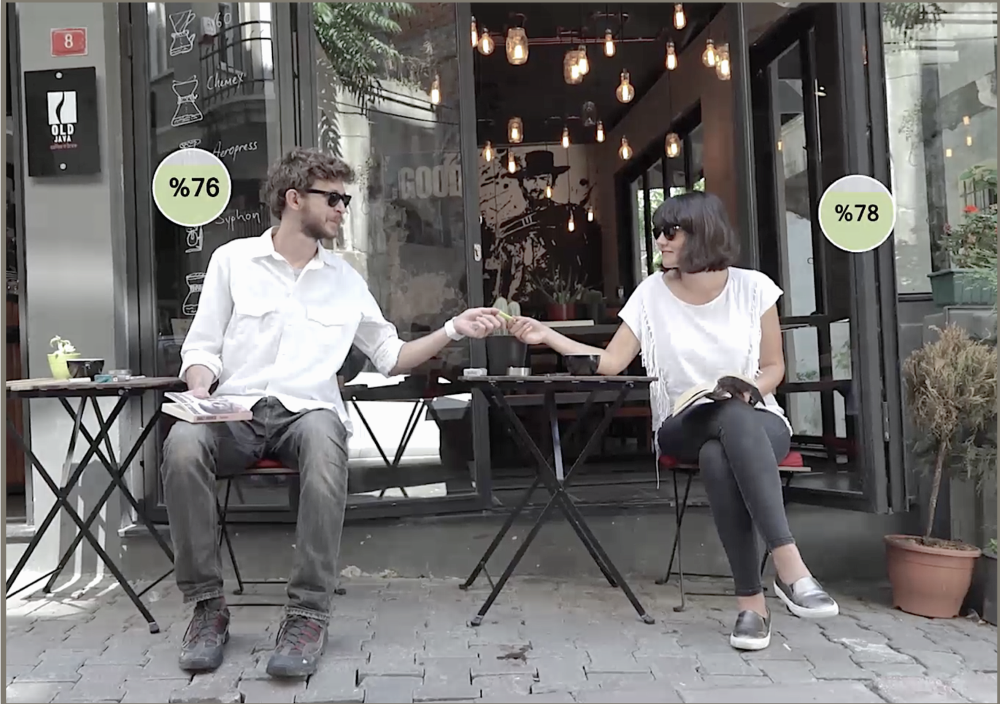
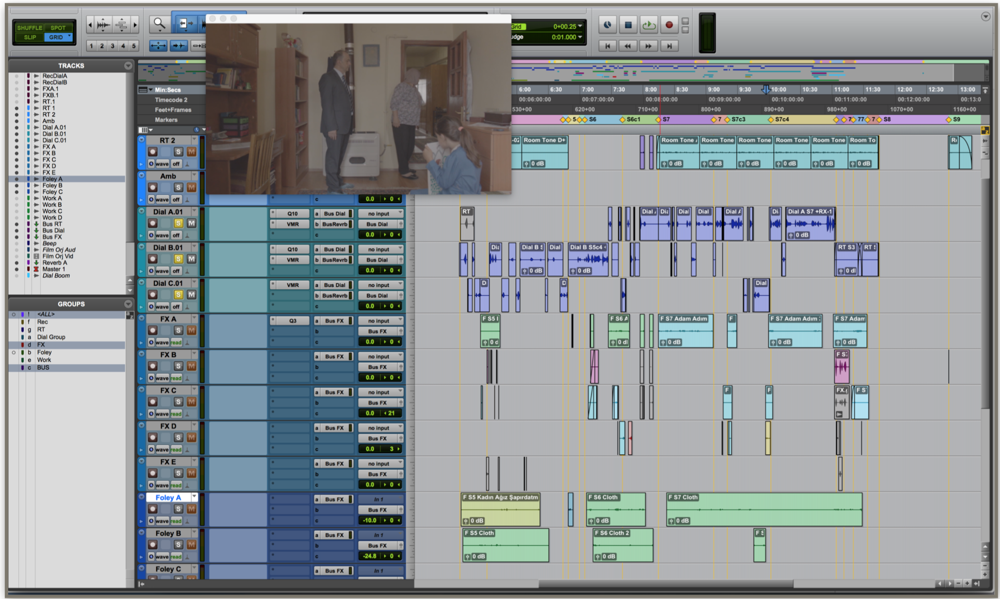
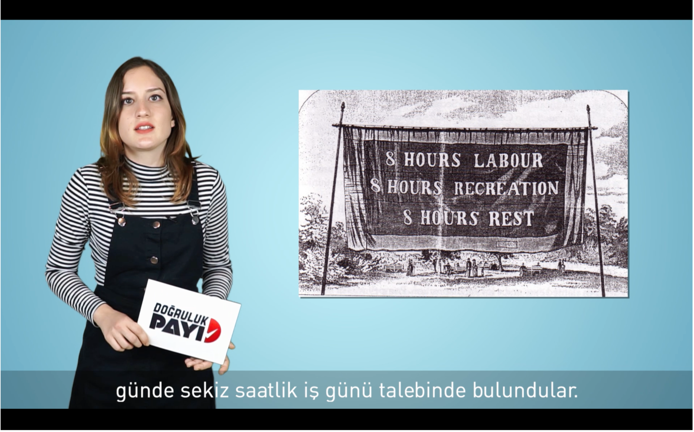

Discover Nazım Eren 30.08 Stable!
Nazım Eren is versatile through various disciplines. Here you can find a collection of his works.
-
Current Development Status
- Back-End Development
- Django
65%
- Node.js
20%
- Express.js
35%
- Flask
25%
- Front-End Development
- HTML 5
72%
- CSS 3
83%
- Flexbox/CSS Grid
79%
- React.js
43%
- Foundation 6
73%
- Database Management
- MongoDB
35%
- SQLite
25%
- SQL
50%
- Utilities
- Docker
25%
- Git
72%
- Language
- Turkish
100%
- English
85%
- German
70%
- Skills
- Problem Solving
80%
- Team Player
75%
- Communication Skills
95%
- Leadership
72%
- Organisational Skills
67%
- Intercultural Understanding
80%
- Skills
- Self-Initiative & Responsibility
82%
- Learning Eagerness
90%
- Technical Understanding
78%
- Flexibility / Adjustability
65%
- Hobbies
- Biking & Bike Mechanic
55%
- Artisan Bakery
85%
- Artisan Coffee
85%
- Instrument & Music
97%
- Django
-
Web Development
Front-End Developer
Nazim Eren Yanik - Personal Web Page
This is my first web page. It's a software-themed page, portraying and marketing me as a clever software package. The idea behind the theme is get out of the boring personal web pages and market myself.
-
Sound & Music Production
Producer & ComposerDead Cells (2018)
I’ve decided to join the trailer music contest in Hamburg. The contest was based on the trailer of the Rogue-Like video game Dead Cells. I’ve arranged an original piece for the trailer. The arrangement based solely on digital instruments that are generated by me on Mai Tai and written note by note on Presonus Studio One 3. Mixing and mastering was done with the DAW’s native Plug-Ins.
Producer & ComposerPercentage (2015)
“Percentage” is the first short film that was written&directed by Caner Gözübüyük. The film is based on a break-up story of a twenty three year old Can, in a world where people can see others’ overall ‘mood percentages’ via a smart-watch style technology.
Sound Design & Post-ProductionPersona (2018)
Persona is a short film written and directed by Yusuf Elbaşı and funded by Turkish Ministry of Culture and Tourism. The film is about complicated interchange between two confiscation officers and the mother-in- law and the daughter of the debtor, who tried to avoid the officers.
Sound Design & Post-ProductionLogin (2018)
Login is a Corporate Work Solutions company in Turkey. The briefing of the project included “The Office” style nine short mockumentary video series to be shown on YouTube and other social media. The videos are about an old-fashion workaholic manager (Semih Bey), who is displeased with and resists to the new HR software that the company recently started to use.
Audio Post-ProductionDoğruluk Payı (2015 - 2019)
Doğruluk Payı is a Fact Checking NGO in Turkey. My duty with them started with the advising for the acoustic design of the studio along with their new media production philosophy.
This page is licensed under a Creative Commons Attribution-NonCommercial-ShareAlike 4.0 International License
.